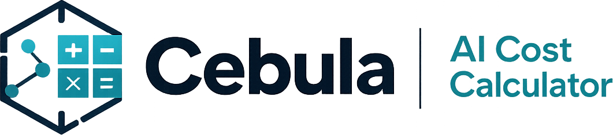
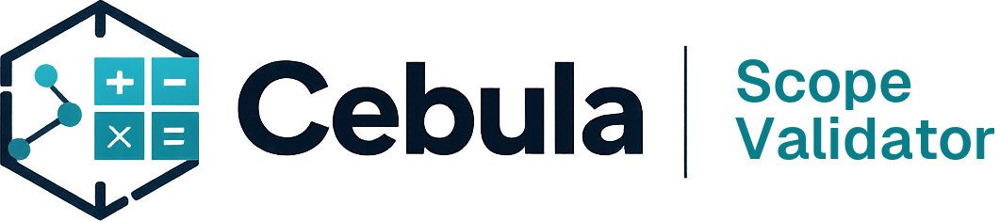
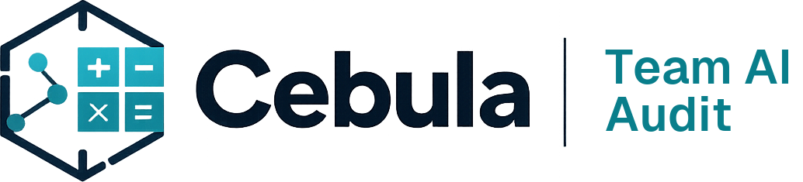

Estimate what AI tools are really costing your team and projects. Team profile, tool selection, project type — formula-based, transparent, no account needed.
TOOLS FOR MODERN TEAMS
Practical, no-nonsense tools for agencies and tech teams who want a clear picture of their costs — not guesswork.
THE TOOLS
Each tool solves one problem well. No accounts required.

Estimate what AI tools are really costing your team and projects. Team profile, tool selection, project type — formula-based, transparent, no account needed.

Stress-test a project proposal before you sign. Upload an RFP or paste a brief — get a structured view of what's missing, what's inflated, and what to push back on.

A structured questionnaire that maps your team's actual AI usage, surfaces gaps, and produces a one-page adoption snapshot you can share with stakeholders.
BUILT BY
10+ years in digital agencies. Former software house founder. SA, BA, lead dev. I built these tools because I kept running into the same problems — invisible AI costs, untrusted estimates, scopes that never held. Cebula is what I wished existed.
CHECK ALSO
Rationalization intelligence before you modernize. Independent, vendor-neutral complexity assessment for enterprise transformation programs.
rationalizehq.com →